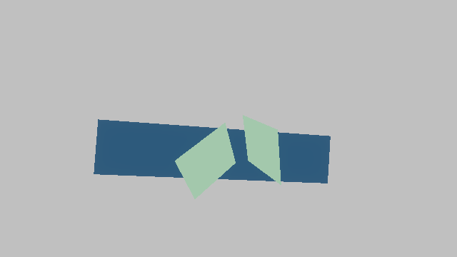
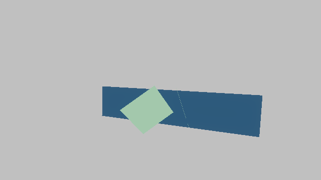

smoke.procedural.camera_pan
suite: smoke generated: 2026-07-08T11:45:29Z
start frame 2
Captures
| Target | Status | Preview | Diff |
|---|
| final_color | captured capture_written |  | |
Assertions
| ID | Metric | Status | Actual |
|---|
| visible_instances_start | renderer.opaque.visible_instances | pass passed | 3 |
end frame 8
Captures
| Target | Status | Preview | Diff |
|---|
| final_color | captured capture_written |  | |
Assertions
| ID | Metric | Status | Actual |
|---|
| frame_index_end | renderer.frame_index | pass passed | 8 |
| visible_instances_end | renderer.opaque.visible_instances | pass passed | 3 |
Metric Windows
pan_frames frames 2-8
| ID | Metric | Statistic | Status | Actual | Samples |
|---|
| frame_index_reaches_end | renderer.frame_index | max | pass passed | 8 | 7 |